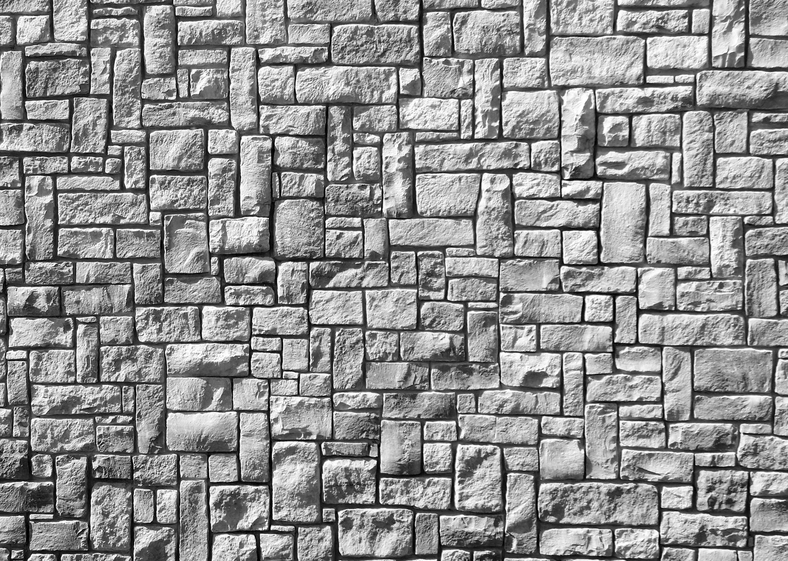
Una identidad de marca para un estudio de arquitectura en Juárez que combina elegancia seria con tradición artesanal mexicana.
GERO Arquitectos es un estudio nuevo especializado en remodelaciones residenciales y desarrollo inmobiliario. Nos contactaron para crear una identidad de marca que reflejara su doble compromiso: rigor arquitectónico profesional y cálida artesanía mexicana.
Su elemento distintivo — la celosía de concreto y ladrillo — se convirtió en la base creativa de todo el sistema visual. El resultado es una marca que se siente estructural pero artesanal, moderna pero profundamente arraigada.
Seria y elegante, pero cálida. Un estudio que valora la estructura tanto como el alma. Profesional pero nunca frío.
Propietarios que buscan remodelaciones e inversionistas inmobiliarios en busca de espacios distintivos y bien diseñados.
Minimalista con acentos artesanales. Texturas de concreto, neutros cálidos y patrones geométricos inspirados en la celosía.
"Artesanía mexicana con precisión arquitectónica." Celosía de concreto y ladrillo a medida que ningún otro estudio en Juárez ofrece.
El logotipo de GERO está construido a partir de formas geométricas puras. Así cobró vida la marca — desde el concepto inicial hasta la retícula final.
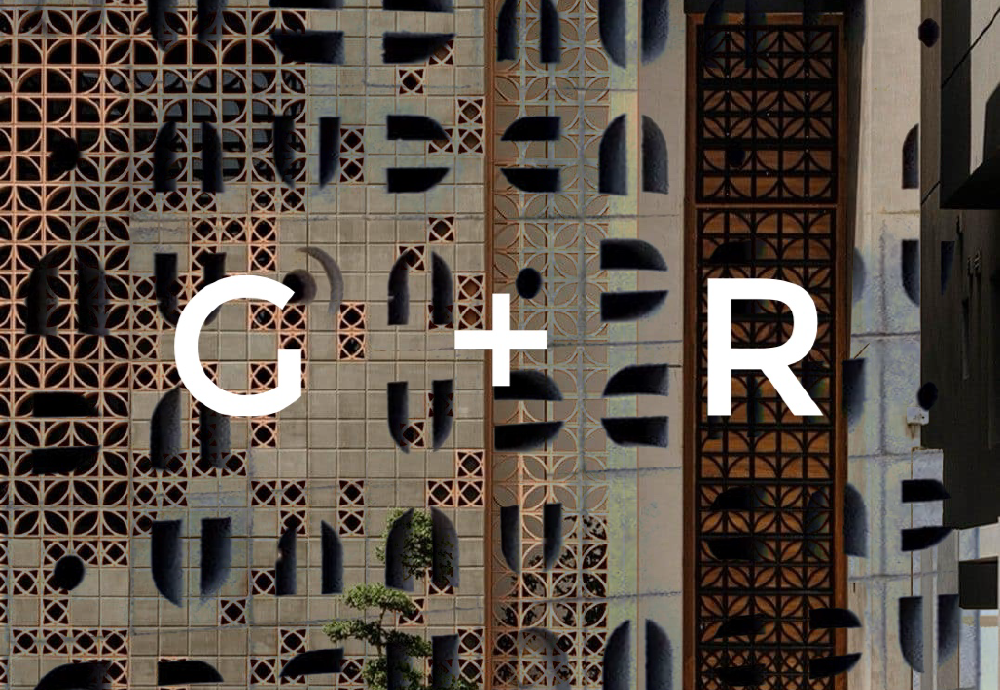
Concepto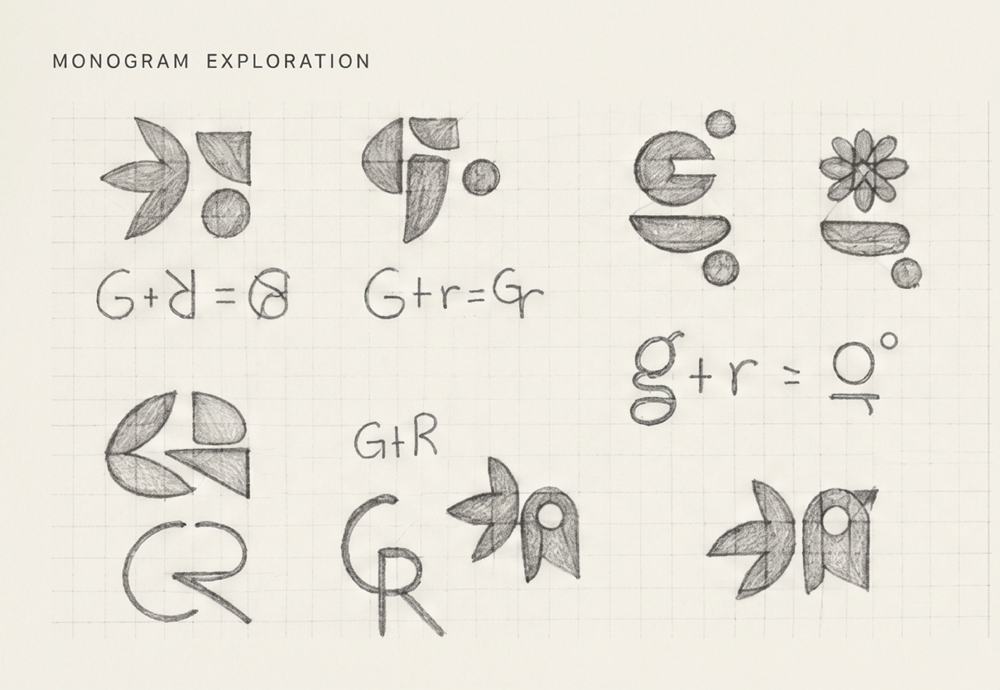
Exploración del Monograma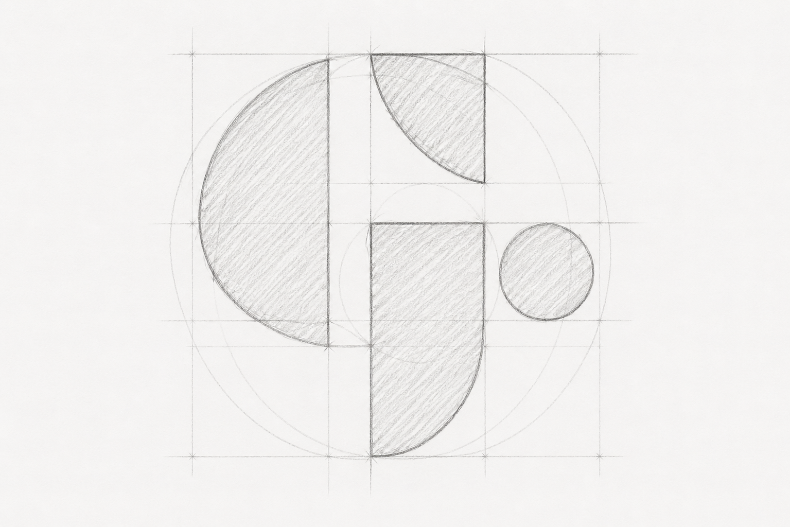
Retícula GeométricaInspirado en materiales de construcción crudos y la luz cálida del norte de México. Una paleta de arena dorada, arcilla cálida y verde terroso.
GERO
Aa Bb Cc Dd Ee Ff Gg · 0123456789
Arquitectos
Aa Bb Cc Dd Ee Ff Gg · 0123456789
El sistema de identidad de GERO está diseñado para ser flexible en aplicaciones digitales y físicas. Incluye múltiples variaciones oficiales del logotipo para garantizar claridad, consistencia y un fuerte reconocimiento de marca en cada contexto.
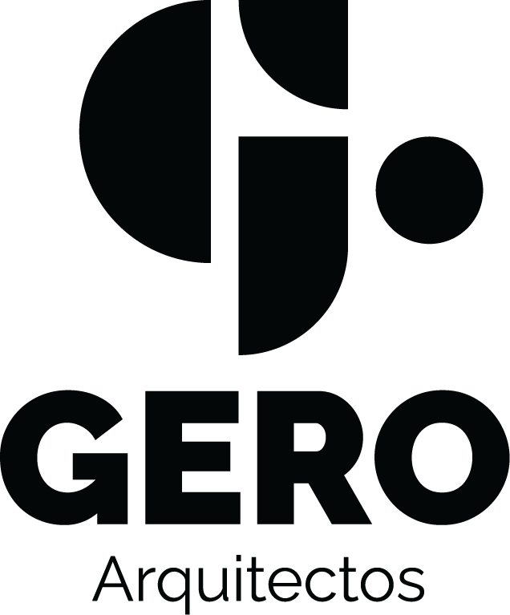
Versión Positiva
Versión Negativa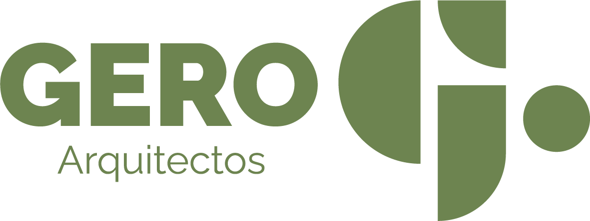
Composición Horizontal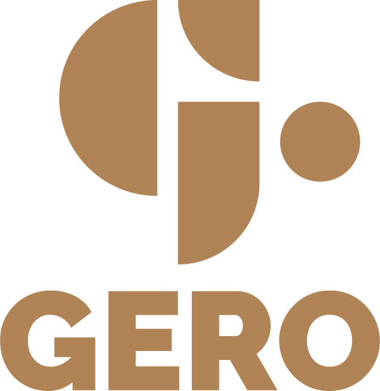
Composición Principal (Sin Lema)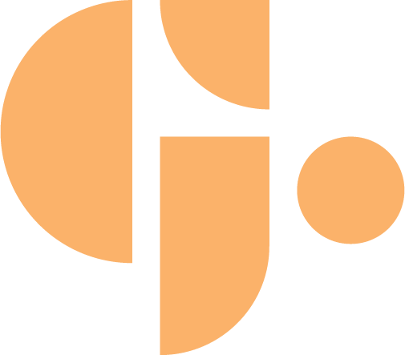
IsotipoLa identidad cobra vida en puntos de contacto físicos y digitales — desde un letrero exterior luminoso hasta redes sociales, planos y papelería de marca.
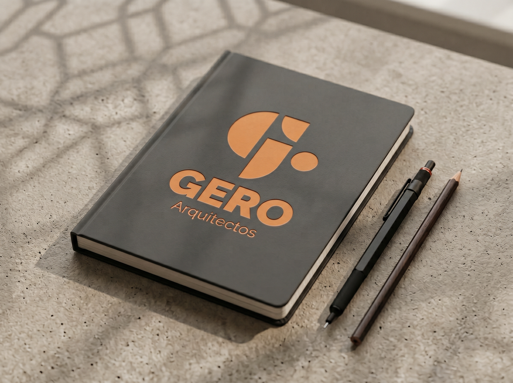
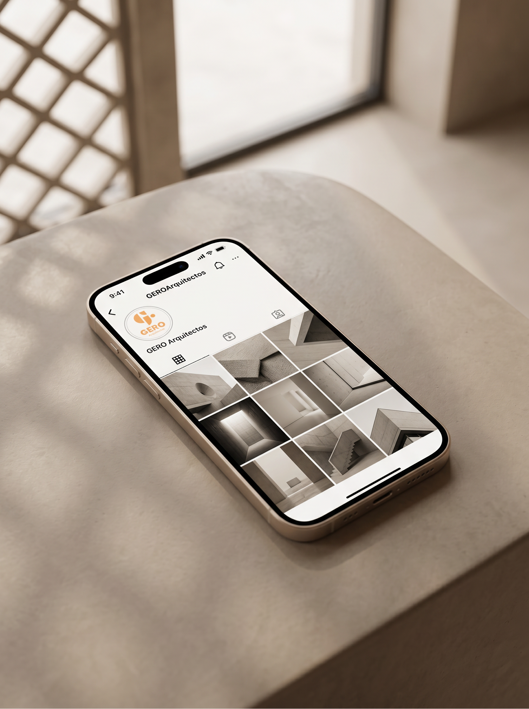
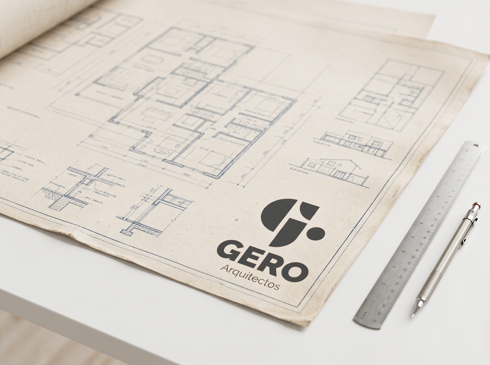
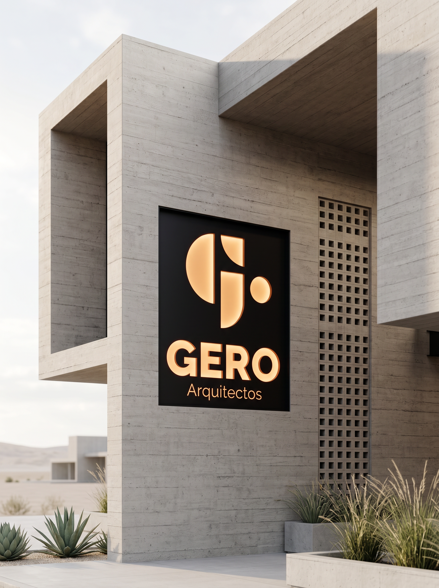
Todos los formatos que el cliente necesita para uso real — desde planos arquitectónicos hasta publicaciones de Instagram.
Formato de Documento Portátil — fácil de compartir y revisar
Fondo transparente — optimizado para uso digital
Alta resolución — apto para impresión y presentaciones
Diseño serio para negocios que construyen cosas que importan.
o escríbeme a makne.info@gmail.com